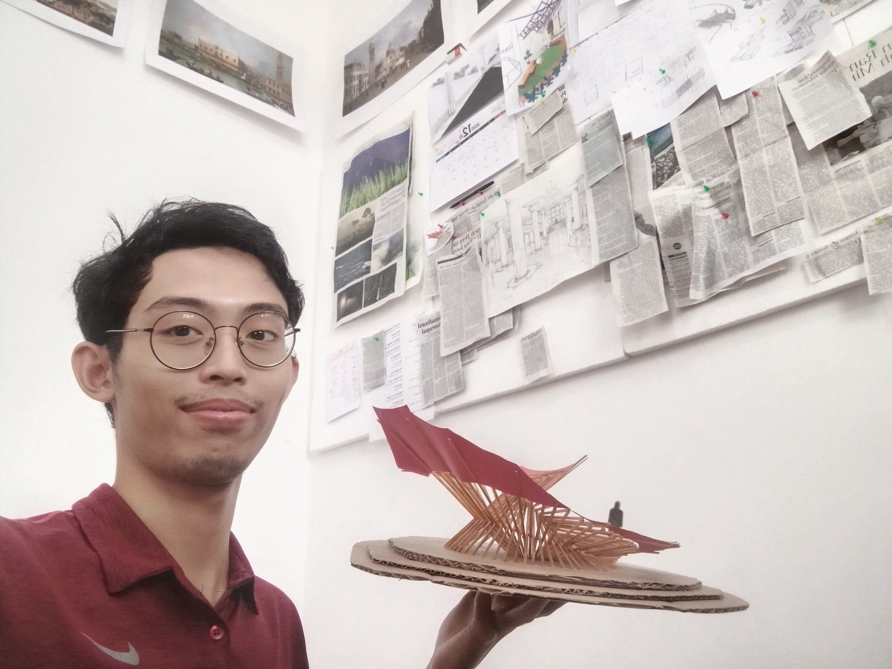

Architectural designer specialising in hospitals. I design buildings and landscapes, simulate how they perform (evacuation, energy, acoustics) and write the software that makes the work faster. I lived in Tokushima, Japan, for four years.

| Language |
|---|
| Japanese |
| Indonesian |
| HTML |
| PowerShell |
| CAD |
| Graphic Design |
| BIM |
| Grasshopper |
| Measurement equipment | Months |
|---|---|
| Laser distance meter (building survey) | 12 |
| Lux meter (site survey) | 1 |
| Thermo-hygrometer (site survey) | 1 |
| Sound level meter (site survey) | 1 |
| Competition | Result | Date |
|---|---|---|
| AYDA Asia Young Designer Award (Nippon Paint), Indonesia | National Grand Finalist | Dec 2025 |
| AFAIR UI 2024 Architecture Competition | 3rd Prize | Nov 2023 |
| DISCO 6th, Sekolah Vokasi UNDIP | Juara Harapan 1 | Apr 2023 |
| National student housing competition, SAPPK ITB | Honorable Mention | Dec 2022 |